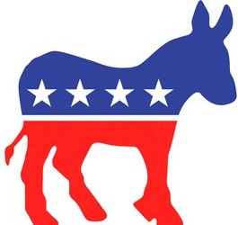
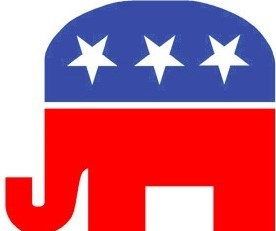

What is Political Circle?
No sides- a characteristic of both a circle and the information we at PC present to you. In a world where every single source is opinionated, it can be tricky to become informed on what's happening around you. Luckily, Political Circle is here for you. We are your one-stop-shop for articles from all viewpoints in order to help you find where you stand and what you believe. Another service that PC can provide you with is helpful information and resources regarding voting and candidates in your area. Overall, PC is here to help you stay informed and involved regarding politics in America.
|  | Liberalism |
 | Conservatism |